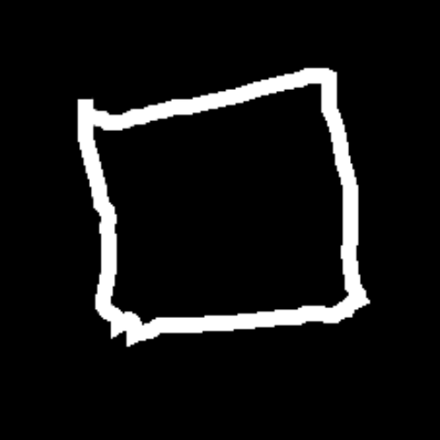
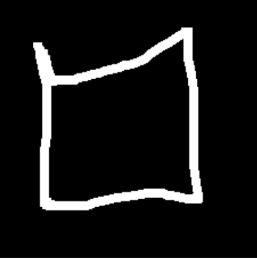
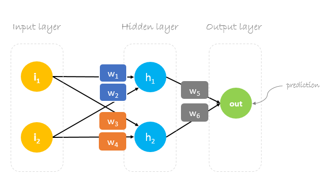

An introduction to Neural Networks
At first sight, a machine recognizing handrawn shapes may not seem very impressive. After all you can do it all the time with your own eyes. But if you think about it, it is actually quite a feat. The individual pixels being lit in these 2 images are very different. 
How Neural Networks work
To understand how neural networks work we'll use our simple model as an example. This will make it easier to understand but in reality theres so much more to neural networks and machine learning in general that we can't cover it all here.
First we need to convert the image into something a computer can understand and process. Since we're using a black and white canvas we can use a single grayscale value for each pixel to make processing faster.
Now that we have a grayscale value for each pixel we can use it to train our neural network. Now, we create the training set containing handdrawn traingles, squares and quadrilaterals.

Now we can train our neural network. We do this by feeding it the training set and telling it what the correct answer is. The neural network will then try to guess what the correct answer is. If it guesses wrong we tell it what the correct answer is and it will try again. This process is called backpropagation and it is what makes neural networks so powerful.
After training the neural network we can use it to predict what shape is drawn on the canvas. We do this by feeding the neural network the grayscale values of the pixels and it will tell us what it thinks the shape is.